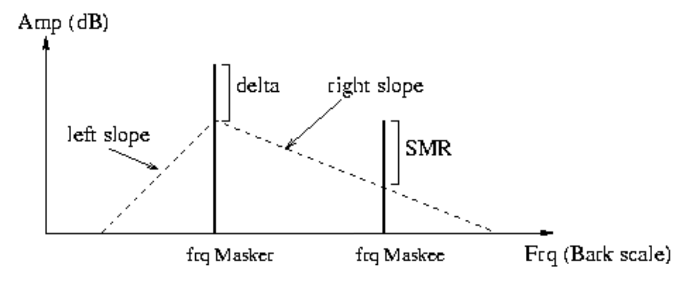

pyats
ats_io
ATS File I/O
Functions for handling loading and saving of .ats files.
.ats files are written in binary format using double floats.
The expected structure of a .ats is:
ATS Header (all double floats) |
|---|
sampling-rate (samples/sec) |
frame-size (samples) |
window-size (samples) |
partials (number) |
frames (number) |
ampmax (max. amplitude) |
frqmax (max. frequency) |
dur (duration) |
type (# specifying frame type, see below) |
The frame data immediately follows the header, again all double floats, frame by frame, with a format matching the type (int) as specified in the header
ATS frames can be one of four different types:
TYPE 1: NO phase & NO noise |
TYPE 2: WITH phase & NO noise |
TYPE 3: NO phase & WITH noise |
TYPE 4: WITH phase & WITH noise |
|---|---|---|---|
time (frame starting time) |
time (frame starting time) |
time (frame starting time) |
time (frame starting time) |
amp (partial #0 amplitude) |
amp (partial #0 amplitude) |
amp (partial #0 amplitude) |
amp (partial #0 amplitude) |
frq (partial #0 frequency) |
frq (partial #0 frequency) |
frq (partial #0 frequency) |
frq (partial #0 frequency) |
… |
pha (partial #0 phase) |
… |
pha (partial #0 phase) |
amp (partial #n amplitude) |
… |
amp (partial #n amplitude) |
… |
frq (partial #n frequency) |
amp (partial #n amplitude) |
frq (partial #n frequency) |
amp (partial #n amplitude) |
frq (partial #n frequency) |
noise (band #0 energy) |
frq (partial #n frequency) |
|
pha (partial #n phase) |
… |
pha (partial #n phase) |
|
noise (band #n energy) |
noise (band #0 energy) |
||
… |
|||
noise (band #n energy) |
- pyats.ats_io.ATS_MAGIC_NUMBER
‘magic’ number used to validate and check endianness when using .ats files: 123.0
- Type
float
- pyats.ats_io.ats_load(name, file, optimize=False, min_gap_size=None, min_segment_length=None, amp_threshold=None, highest_frequency=None, lowest_frequency=None)[source]
Function to load a .ats file into python
Loads a .ats file into python and provides routines to re-optimize the
AtsSounddata if required.- Parameters
name (str) – name used for labeling
AtsSoundfile (str) – filepath to .ats file to load
optimize (bool, optional) – determined whether to call
optimizeupon load (default: True)min_gap_size (int, optional) – when optimizing, tracked partial gaps smaller than or equal to this (in frames) will be interpolated and filled. If None, no gap filling will occur (default: None)
amp_threshold (float, optional) – minimum amplitude threshold used during optimization to prune tracks. If None, no amplitude thresholding will occur (default: None)
highest_frequency (float, optional) – maximum frequency threshold used during optimization to prune tracks. If None, no maximum frequency thresholding will occur (default: None)
lowest_frequency (float, optional) – minimum frequency threshold used during optimization to prune tracks. If None, no minimum frequency thresholding will occur (default: None)
- Returns
the loaded ats data
- Return type
- Raises
ValueError – if file is not a compatible ATS format (i.e., the ATS magic number was not decodable)
- pyats.ats_io.ats_save(sound, file, save_phase=True, save_noise=True)[source]
Function to save an
AtsSoundto a file- Parameters
sound (
AtsSound) – ats sound object to savefile (str) – file path to save to
save_phase (bool, optional) – whether to include phase data in file output (default: True)
save_noise (bool, optional) – whether to include noise band energy data in file output (default: True)
ats_structure
Data Abstraction for ATS
TODO About
- class pyats.ats_structure.AtsPeak(amp=0.0, frq=0.0, pha=0.0, smr=0.0, track=0, db_spl=0.0, barkfrq=0.0, slope_r=0.0, asleep_for=None, duration=1)[source]
Bases:
objectTODO .. attribute:: TODO
- class pyats.ats_structure.AtsSound(name, sampling_rate, frame_size, window_size, partials, frames, dur, has_phase=True)[source]
Bases:
objectTODO main data abstraction amp, frq, and pha contain sinusoidal modeling information as arrays of arrays of data arranged by partial par-energy and band-energy hold noise modeling information (experimental format)
- TODO
- optimize(min_gap_size=None, min_segment_length=None, amp_threshold=None, highest_frequency=None, lowest_frequency=None)[source]
Function to run optimization routines on the frames of partial data stored in the object.
- The optimizations performed are:
fill gaps of min_gap_size or shorter
trim short partials
calculate and store maximum and average frq and amp
prune partials below amplitude threshold
prune partials outside frequency constraints
re-order partials according to average frq
- Parameters
min_gap_size (int, optional) – partial gaps longer than this (in frames) will not be interpolated and filled in. If None, this sub-optimization will be skipped. (default: None)
min_segment_length (int, optional) – minimal size (in frames) of a valid partial segment, otherwise it is pruned. If None, this sub-optimization will be skipped. (default: None)
amp_threshold (float, optional) – amplitude threshold used to prune partials. If None, this sub-optimization will be skipped. (default: None)
highest_frequency (float) – upper frequency threshold, tracks with maxima above this will be pruned. If None, this sub-optimization will be skipped. (default: None)
lowest_frequency (float) – lower frequency threshold, tracks with minima below this will be pruned. If None, this sub-optimization will be skipped. (default: None)
ats_synth
Synthesizer Methods for Rendering .ats Files to Audio
- pyats.ats_synth.synth(ats_snd, normalize=False, compute_phase=True, export_file=None, sine_pct=1.0, noise_pct=0.0, noise_bands=None, normalize_sine=False, normalize_noise=False)[source]
Function to synthesize audio from
AtsSoundSine generator bank and band-limited noise synthesizer for .ats files. When phase information is ignored phase is linearly interpolated between consecutive frequencies from an initial phase of 0.0 at the first non-zero amplitude for that partial.
The method for cubic polynomial interpolation of phase used is credited to:
MR. McAulay and T. Quatieri, “Speech analysis/Synthesis based on a sinusoidal representation,” in IEEE Transactions on Acoustics, Speech, and Signal Processing, vol. 34, no. 4, pp. 744-754, August 1986
- Parameters
ats_snd (
AtsSound) – the .ats file used to synthesizenormalize (bool, optional) – normalize sound to ±1 before output (default: False)
compute_phase (bool, optional) – use cubic polynomial interpolation of phase information during synthesis, if available (default: True)
export_file (str) – audio file path to write synthesis to, or None for no file output (default: None)
sine_pct (float) – percentage of sine components to mix into output (default: 1.0)
noise_pct (float) – percentage of noise components to mix into output (default: 0.0)
noise_bands (ndarray[float]) – 1D array of band edges to use for noise analysis. Currently using other than 25 bands (i.e. 26 edges) is not fully supported. If None,
ATS_CRITICAL_BAND_EDGESwill be used. (default: None)normalize_sine (bool) – normalize sine components to ±1 before mixing (default: False)
normalize_noise (bool) – normalize noise componenets to ±1 before mixing (default: False)
- Returns
A 1D array of amplitudes representing the synthesized sound
- Return type
ndarray[float]
- pyats.ats_synth.synth_CLI()[source]
Command line wrapper for
synthExample
Display usage details with help flag
$ pyats-synth -h
Generate a wav file from a sine generator bank from an ats file
$ pyats-synth example.ats example.wav
Generate a wav file from a sine generator bank and band-limited noise using from an ats file
$ pyats-synth example.ats example.wav –noise 1.0
pyats.atsa
critical_bands
Critical Bands and Signal-to-Mask Ratio Evaluation
This module is used to evaluate critical band masking for signal-to-mask ratio calculations
- pyats.atsa.critical_bands.ATS_CRITICAL_BAND_EDGES
1D array containing 26 frequencies that distinguish the default 25 critical bands
- Type
ndarray[float]
- pyats.atsa.critical_bands.compute_slope_r(masker_amp_db, slope_l=-27.0)[source]
Function to compute right slope of triangular mask
Computes the right slope of mask, dependent on the level of the masker
- Parameters
masker_amp_db (float) – Amplitude (in dB) of the masker peak
slope_l (float, optional) – slope (in dB / bark) of the lower frequency side of the masking triangle
- pyats.atsa.critical_bands.evaluate_smr(peaks, slope_l=-27.0, delta_db=-50)[source]
Function to evaluate signal-to-mask ratio for the given peaks
This function evaluates masking values (SMR) for
AtsPeak`s in list `peaksIteratively the parameters will be use to generate a triangular mask with a primary vertex at the frequency of, and at delta_dB below the amplitude of the masker.All other peaks are evaluated based on the triangular edges descending from the primary vertex according to slope_l for lower frequencies, and a calculated slope for higher frequencies. Maskee amplitudes proportions above this edge are then assigned to the maskee peak’s smr property. By the end of the iteration, the largest smr seen as maskee is kept in the peak’s smr property.
- Parameters
peaks (Iterable[
AtsPeak]) – An iterable collection of AtsPeaks that will have their smr attributes updatedslope_l (float, optional) – A float (in dB/bark) to dictate the slope of the left side of the mask (default: -27.0)
delta_db (float, optional) – A float (in dB) that sets the amplitude threshold for the masking curves Must be (<= 0dB) (default: -50)
- Raises
ValueError – If delta_db is not less than or equal to 0.
{kind=link}
- pyats.atsa.critical_bands.find_band(freq)[source]
Function to retrieve lower band edge in
ATS_CRITICAL_BAND_EDGES- Parameters
freq (float) – A frequency (in Hz) to find the related band in
ATS_CRITICAL_BAND_EDGESfor- Returns
index into
ATS_CRITICAL_BAND_EDGESthat marks the lower band edge for the given freq- Return type
int
- Raises
LookupError – if the frequency given is outside the range of the lowest or highest edge in
ATS_CRITICAL_BAND_EDGES
- pyats.atsa.critical_bands.frq_to_bark(freq)[source]
Function to convert frequency from Hz to bark scale
This function will convert frequency from Hz to bark scale, a psychoacoustical scale used for subjective measurements of loudness.
- Parameters
freq (float) – A frequency (in Hz) to convert to bark scale
- Returns
the frequency in bark scale
- Return type
float
peak_detect
Single-Frame Peak Detection from FFT Data
Functions to process FFT data and extract peaks
- pyats.atsa.peak_detect.parabolic_interp(alpha, beta, gamma)[source]
Function to obtain a parabolically modeled maximum from 3 points
Given 3 evenly-spaced points, a parabolic interpolation scheme is used to calculate a coordinate frequency offset and maximum amplitude at the estimated parabolic apex.
Expected: alpha <= beta <= gamma
- Parameters
alpha (float) – Amplitude at lower frequency
beta (float) – Amplitude at center frequency
gamma (float) – Amplitude at upper frequency
- Returns
offset (float) – Frequency offset (in samples) relative to center frequency bin
height (float) – Amplitude of estimated parabolic apex
- pyats.atsa.peak_detect.peak_detection(fftfreqs, fftmags, fftphases, lowest_bin=None, highest_bin=None, lowest_magnitude=None)[source]
Function to detect peaks from FFT data
This function scans for peaks in FFT frequency data, returning found peaks that pass constraint criteria. Because FFT data is restricted to discrete bins, interpolation is used to provide a more precise estimation of amplitude, phase, and frequency.
- Parameters
fftfreqs (ndarray[float64]) – A 1D array of frequency labels (in Hz) corresponding to fftmags and fftphases
fftmags (ndarray[float64]) – A 1D array of FFT magnitudes for each frequency in fftfreqs; this is the data where we search for the peaks.
fftphases (ndarray[float64]) – A 1D array of FFT phases (in radians) for each index in fftfreqs and fftmags
lowest_bin (int, optional) – Lower limit bin index used to restrict what bins of fftfreqs are searched (default: None)
highest_bin (int, optional) – Upper limit bin index used to restrict what bins of fftfreqs are searched (default: None)
lowest_magnitude (float, optional) – Minimum amplitude threshold that must be exceeded for a peak to validly detected (default: None)
- Returns
A list of
AtsPeakconstructed from detected peaks- Return type
list[
AtsPeak]
- pyats.atsa.peak_detect.phase_correct(left, right, offset)[source]
Function for angular interpolation of phase
- Parameters
left (float) – Phase value (in radians) to interpolate between
right (float) – Other phase value (in radians) to interpolate between
offset (float) – Phase offset (in samples) between left and right at which to calculate
- Returns
interpolated phase (in radians)
- Return type
float
peak_tracking
Peak Tracking algorithms to assemble spectral trajectories
Peaks issued by the peak detection algorithm need to be connected and translated into spectral trajectories. This process involves the evaluation of the possible candidates to continue trajectories on a frame-by-frame basis.
This is done using tracks that keep information of recent average values for each of the trajectory parameters. The length of the tracks is adjustable and has to be tuned depending on the characteristics of the analyzed sound.
A Gale-Shapley stable matching algorithm is used to determine the best candidate pair using a the cost criteria:
\(cost = \frac{|P_{freq} - T_{freq}| + \alpha * |P_{smr} - T_{smr}|}{1 + \alpha}\)
where \(P_{freq}\) is the candidate peak frequency, and \(P_{smr}\) its SMR, \(T_{freq}\) is the track frequency, and \(T_{smr}\) its SMR, both averaged over the track length (typically 3 frames). \(\alpha\) is a coefficient controlling how much the SMR deviation affects the cost.
The use of the SMR continuation as a parameter for the peak tracking process is based upon psychoacoustic temporal masking phenomena. Conceptually, we assume that masking profiles of stable sinusoidal trajectories can only evolve at slow rate (no sudden changes). This is true for analysis performed with hop sizes between 10 and 50 milliseconds, which is comparable to the average duration of pre- and post-making effects.
New tracks get created from orphan peaks (the ones that were not incorporated to any existing tracks), and tracks which couldn’t find continuing peaks are set to sleep.
- class pyats.atsa.peak_tracking.MatchCost(cost, index)[source]
Bases:
objectObject to abstract cost for comparisons
- cost
the calculated cost to index
- Type
float
- index
the index that indicates the track the cost was calculated against
- Type
int
- pyats.atsa.peak_tracking.are_valid_candidates(candidate1, candidate2, deviation)[source]
Function to determine if the distance between two peaks are within the relative deviation constraint
Peaks are valid candidates for pair if their absolute distance is smaller than the frequency deviation multiplied by the lower of the candidate’s frequencies.
- pyats.atsa.peak_tracking.find_track_in_peaks(track, peaks)[source]
Function to search a the first peak found tagged a given track ind
- pyats.atsa.peak_tracking.peak_dist(pk1, pk2, alpha)[source]
Function to calculate peak frequency distance
This function is used to calculate the cost for the peak matching algorithm and allows for psychoacoustic biasing of the calculation:
\(dist = \frac{|P1_{freq} - P2_{freq}| + \alpha * |P1_{smr} - P2_{smr}|}{1 + \alpha}\)
where \(P\#_{freq}\) is the peak’s frequency, and \(P\#_{smr}\) its SMR. \(\alpha\) is a coefficient controlling how much the SMR deviation affects the distance.
- Parameters
pk1 (
AtsPeak) – a candidate peakpk1 – a candidate peak
alpha (float) – percent of SMR to use to bias the result
- Returns
the frequency distance (in Hz) between the peaks
- Return type
float
- pyats.atsa.peak_tracking.peak_tracking(tracks, peaks, frame_n, analysis_frames, sample_rate, hop_size, frequency_deviation=0.45, SMR_continuity=0.0, min_gap_length=1)[source]
Core function to coordinate peak tracking
This function coordinates the matching of new peaks with existing tracks using an adaptation of the Gale-Shapley algorithm for stable matching. The algorithm is gap-size aware and will monitor ‘slept’ tracks within the minimum gap distance as candidates. Linear interpolation is used to fill the gaps for frequency and amplitude, and a cubic polynomial interpolation for phase.
NOTE: Tracks, peaks, and analysis_frames are updated directly.
- Parameters
tracks (Iterable[
AtsPeak]) – collection of established trackspeaks (Iterable[
AtsPeak]) – collection of candidate peaks to matchframe_n (int) – the current frame
analysis_frames (Iterable[Iterable[
AtsPeak]]) – a running collection storing theAtsPeakobjects at each frame in timesample_rate (int) – the sampling rate (in samples / s)
hop_size (int) – the inter-frame distance (in samples)
frequency_deviation (float, optional) – maximum relative frequency deviation used to constrain peak tracking matches (default: 0.45)
SMR_continuity (float, optional) – percentage of SMR to use in cost calculations during peak tracking (default: 0.0)
min_gap_length (int) – tracked partial gaps longer than this (in frames) will not be interpolated (default: 1)
- pyats.atsa.peak_tracking.phase_interp(freq_0, freq_t, pha_0, t)[source]
Function to compute linear phase interpolation
NOTE: currently not used in peak tracking, but supplied for legacy purposes
Assumes smooth linear interpolation, where the average frequency dictates phase rate estimate from the relative time 0 to time t.
- Parameters
freq_0 (float) – initial frequency (in Hz)
freq_t (float) – frequency at time t (in Hz)
pha_0 (float) – initial phase (in radians)
t (float) – time (in s) from freq_0
- Returns
the phase (in radians) at relative time t
- Return type
float
- pyats.atsa.peak_tracking.phase_interp_cubic(freq_0, freq_t, pha_0, pha_t, i_samps_from_0, samps_from_0_to_t, sample_rate)[source]
Function to interpolate phase using cubic polynomial interpolation
Uses cubic interpolation to determine and intermediate phase within the curve linking a particular frequency and phase at relative time 0, to a frequency and phase at time t.
The basis for this method is credited to:
MR. McAulay and T. Quatieri, “Speech analysis/Synthesis based on a sinusoidal representation,” in IEEE Transactions on Acoustics, Speech, and Signal Processing, vol. 34, no. 4, pp. 744-754, August 1986
- Parameters
freq_0 (float) – initial frequency (in Hz)
freq_t (float) – frequency at time t (in Hz)
pha_0 (float) – initial phase (in radians)
pha_t (float) – phase at time t (in radians)
i_samps_from_0 (int) – relative sample index i to interpolate at
samps_from_0_to_t (int) – distance (in samples) from 0 to t
sample_rate (int) – sampling rate (in samps/s)
- Returns
the modeled phase (in radians) at sample i
- Return type
float
- pyats.atsa.peak_tracking.update_track_averages(tracks, track_length, frame_n, analysis_frames, beta=0.0)[source]
Function to update running averages of recent peaks
Using the list of current tracks, we use track_length frames to look back and update, the average amp, frq, and smr values for the tracks.
NOTE: Tracks are updated directly without return value.
- Parameters
tracks (Iterable[
AtsPeak]) – iterable of tracks to updatetrack_length (int) – how far back in time (in frames) to start average calculations
frame_n (int) – the current frame
analysis_frames (Iterable[Iterable[
AtsPeak]]) – a running collection storing theAtsPeakobjects at each frame in timebeta (float, optional) – TOadditional bias for the immediately prior frames values when calculating smoothing trajectories (default: 0.0)
residual
TODO Summary
TODO About
- pyats.atsa.residual.band_to_energy(ats_snd, band_edges, use_smr=False)[source]
Function to TODO
TODO
- Parameters
ats_snd (
AtsSound) – TODOband_edges (TODO) – TODO
use_smr (bool, optional) – TODO (default: False)
- pyats.atsa.residual.compute_residual(residual_file, ats_snd, in_sound, start_sample, end_sample, export_residual=True)[source]
Function to computes the difference between the ats_snd synthesis and the original sound
TODO
- Parameters
residual_file (str) – TODO
ats_snd (
AtsSound) – TODOin_sound (ndarray[float]) – TODO
start_sample (int) – TODO
end_sample (int) – TODO
export_residual (bool, optional) – TODO (default: True)
- Returns
residual – TODO
- Return type
ndarray[float]
- pyats.atsa.residual.remove_bands(ats_snd, threshold)[source]
Function TODO
TODO remove bands from ats_snd that are below threshold (in dB)
- Parameters
ats_snd (
AtsSound) – TODOthreshold (float) – TODO
- pyats.atsa.residual.residual_N(M, min_fft_size, factor=2)[source]
Function to TODO
TODO
- Parameters
M (int) – TODO
min_fft_size (int) – TODO
factor (int, optional) – TODOe)
- Returns
TODO
- Return type
int
- pyats.atsa.residual.residual_analysis(residual, ats_snd, min_fft_size=4096, equalize=False, pad_factor=2, band_edges=None, par_energy=False, verbose=True)[source]
Function to TODO
TODO
- Parameters
residual (ndarray[float]) – TODO
ats_snd (
AtsSound) – TODOmin_fft_size (int, optional) – TODO (default: 4096)
equalize (bool, optional) – TODO (default: False)
pad_factor (int, optional) – TODO (default: 2)
band_edges (TODO) – TODO (default: None)
par_energy (bool) – TODO (default: False)
verbose (bool, optional) – TODO (default: True)
tracker
Main ATS Analysis Function
The analysis tracker is responsible for driving the analysis of an audio file into the .ats format. The system uses a Short Time Fourier Transform (STFT) as is core analysis tool. Sound is analyzed using overlapping time windows and by taking the STFT on each window.
After converting to polar coordinates, a peak detection algorithm (peak_detection)
determines relevant spectral peaks in the data. At this point, pyschoacoustics
are considered in the form of masking curve evaluation and computation of the
Signal-to-Mask ratio (SMR) for each candidate peak. SMR data is store together with
a corrected frequency, magnitude and phase.
The next step involves frame-to-frame tracking of peaks (peak_tracking) to connect peaks that
follow a similar spectral trajectory using both frequency and SMR data. The system
uses a stable matching algorithm to pair candidate peaks, and is capable of interpolating
gaps in the tracks.
Once valid tracks are assembled, the results can be modeled with sinusoids (atsa_synth) and subtracted
from the origin source sound to compute a residual. NOTE: This part of the ATS system is currently under
active research. For now, the residual analysis (residual) is modeled using a
25 time-varying critical noise band energy model (consistent with the critical bands used during SMR evaluation).
These noise bands can then be resynthesized using 25 correspoding banks of time-enveloped, band-limited noise.
Analysis is finally stored and abstracted as an AtsSound object.
- pyats.atsa.tracker.tracker(in_file, ats_snd_label, start=0.0, duration=None, lowest_frequency=20, highest_frequency=20000.0, frequency_deviation=0.1, window_cycles=4, window_type='blackman-harris-4-1', hop_size=0.25, fft_size=None, amp_threshold=0.001, track_length=3, min_gap_length=3, min_segment_length=3, last_peak_contribution=0.0, SMR_continuity=0.0, residual_file=None, optimize=True, optimize_amp_threshold=None, force_M=None, force_window=None, window_alpha=0.5, window_beta=1.0, verbose=False)[source]
Function to generates an Analysis-Transformation-Synthesis
AtsSoundfrom an audio file- Parameters
in_file (str) – path to the audio file to analyze (must be single channel/mono)
ats_snd_label (str) – internal name for the
AtsSoundstart (float) – timepoint (in s) in audiofile to begin analysis (default: 0.0)
duration (float) – max duration (in s) in audiofile from start to end analysis or ‘None’ if analyze to end (default: None)
lowest_frequency – lowest frequency to analyze (must be > 0) (default: 20)
highest_frequency (float) – highest frequency to analyze (capped to nyquist frequency and must be greater than lowest_frequency) (default: 20000.0)
frequency_deviation (float) – maximum relative frequency deviation used to constrain peak tracking matches (default: 0.1)
window_cycles (int) – lowest frequency to fit in analysis window; used to determine window size (default: 4)
window_type (str) – type of window to use for FFT analysis (default: ‘blackman-harris-4-1’). See
VALID_FFT_WINDOW_DEFINITIONShop_size (float) – fraction of window size to shift from frame-to-frame (default: 0.25)
fft_size (int) – None, or force an fft size (default: None)
amp_threshold (float) – lowest amplitude used for peak detection (default: 0.001)
track_length (int) – number of frames used to smooth frequency trajectories (default: 3)
min_gap_length (int) – tracked partial gaps longer than this (in frames) will not be interpolated (default: 3)
min_segment_length (int) – minimal size (in frames) of a track segment, otherwise it is pruned (default: 3)
last_peak_contribution (float) – additional bias for the immediately prior frames values when calculating smoothing trajectories (default: 0.0)
SMR_continuity (float) – percentage of SMR to use in cost calculations during peak tracking (default: 0.0)
residual_file (str) – path to the audio file used to store residual analysis. NOTE: noise calculation will not be performed in .ats file without this (default: None)
optimize (bool) – whether to perform the post-peak tracking optimization on the
AtsSoundobject (default: True)optimize_amp_threshold (float) – additional amplitude threshold used during optimization to prune tracks (default: None)
force_M (int) – None, or a forced window length in samples (default: None)
force_window (ndarray[float]) – None, or a 1D array describing a windowing curve (default: None)
window_alpha (float) – parameter used for calculating tukey windows (default: 0.5)
window_beta (float) – parameter used for calculating certain window types (default: 1.0)
verbose (bool) – increase verbosity (default: False)
- Returns
the ats object that represents the analysis of the input audio file
- Return type
- Raises
ValueError – if input file is not single channel/mono
ValueError – if lowest_frequency is < 0.0
ValueError – if highest_frequency is < lowest_frequency
- pyats.atsa.tracker.tracker_CLI()[source]
Command line wrapper for
trackerExample
Display usage details with help flag
$ pyats-atsa -h
Analyze a wav file
$ pyats-atsa example.wav example.ats
Analyze a wav file and compute the residual and increase verbosity
$ pyats-atsa example.wav example.ats -v -r example-residual.wav
utils
Utility Functions for ATS Analysis
- pyats.atsa.utils.MAX_DB_SPL
maximum DB_SPL level; used for converting amplitude units
- Type
float
- pyats.atsa.utils.ATS_MIN_SEGMENT_LENGTH
default minimum segment length
- Type
int
- pyats.atsa.utils.ATS_AMP_THRESHOLD
default amp threshold
- Type
float
- pyats.atsa.utils.ATS_NOISE_THRESHOLD
default noise threshold
- Type
float
- pyats.atsa.utils.amp_to_db(amp)[source]
Function to convert amplitude to decibels: \(20 * \log_{10}{amp}\)
- Parameters
amp (float) – an amplitude value
- Returns
the converted decibel value
- Return type
float
- pyats.atsa.utils.amp_to_db_spl(amp)[source]
Function to convert amplitude to decibel sound pressure level (dB SPL)
- Parameters
amp (float) – an amplitude value
- Returns
the converted dB SPL value
- Return type
float
- pyats.atsa.utils.compute_frames(total_samps, hop)[source]
Function to compute the number frames to use in the specified analysis.
Calculates an extra frame to prevent attenuation during windowing at the tail and to allow for interpolation at the end of the soundfile.
- Parameters
total_samps (int) – number of samples in analyzed sound duration
hop (int) – interframe distance in samples
- Returns
number of frames to use for STFT analysis
- Return type
int
- pyats.atsa.utils.db_to_amp(db)[source]
Function to convert decibels to amplitude: \(10^{dB / 20.0}\)
- Parameters
db (float) – a decibel value
- Returns
the converted amplitude value
- Return type
float
- pyats.atsa.utils.next_power_of_2(num)[source]
Function to return the closest power of 2 integer more than or equal to an input
- Parameters
num (int) – a positive integer
- Returns
the closest power of 2 integer more than or equal to num
- Return type
int
- pyats.atsa.utils.optimize_tracks(tracks, analysis_frames, min_segment_length, amp_threshold, highest_frequency, lowest_frequency)[source]
Function to run optimization routines on the established tracks.
- The optimizations performed are:
trim short partials
calculate and store maximum and average frq and amp
prune tracks below amplitude threshold
prune tracks outside frequency constraints
sort and renumber tracks and peaks in analysis_frames according to average frq
NOTE: directly updates analysis_frames, pruning peaks corresponding to pruned tracks.
- Parameters
tracks (Iterable[
AtsSound]) – collection of established tracksanalysis_frames (Iterable[Iterable[
AtsPeak]]) – a collection storing theAtsPeakobjects at each frame in timemin_segment_length (int) – minimal size (in frames) of a valid track segment, otherwise it is pruned
amp_threshold (float) – amplitude threshold used to prune tracks. If None, will default to
ATS_AMP_THRESHOLDconverted to amplitude.highest_frequency (float) – upper frequency threshold, tracks with maxima above this will be pruned
lowest_frequency (float) – lower frequency threshold, tracks with minima below this will be pruned
- Returns
tracks – the optimized subset of input tracks
- Return type
Iterable[
pyats.ats_structure.AtsPeak]
windows
Functions to Generate FFT Windows
A collection of window utilies to generate several useful window types:
blackman-exact |
kaiser |
cauchy |
blackman |
gaussian |
connes |
blackman-harris-3-1 |
poisson |
exponential |
blackman-harris-3-2 |
cauchy |
bartlett |
blackman-harris-4-1 |
connes |
riemann |
blackman-harris-4-2 |
welch |
tukey |
rectangular |
kaiser |
hamming |
parzen |
gaussian |
hann |
welch |
poisson |
hann-poisson |
Most equations are adapted from the following two papers:
F. J. Harris, “On the use of windows for harmonic analysis with the discrete Fourier transform,” in Proceedings of the IEEE, vol. 66, no. 1, pp. 51-83, Jan. 1978.
A. Nuttall, “Some windows with very good sidelobe behavior,” in IEEE Transactions on Acoustics, Speech, and Signal Processing, vol. 29, no. 1, pp. 84-91, February 1981
- pyats.atsa.windows.VALID_FFT_WINDOW_DEFINITIONS
a list of supported window types
- Type
list[str]
- pyats.atsa.windows.ATS_BLACKMAN_WINDOW_COEFF_LABELS
A dictionary to match blackman window type strings to their coefficients
- Type
dict[str : list[float]]
- pyats.atsa.windows.bes_i0(x)[source]
Modified Bessel Function of the First Kind from “Numerical Recipes in C”
- Parameters
x (float) – Bessel function input
- Returns
Bessel function output
- Return type
float
- pyats.atsa.windows.make_blackman_window(window_type, size)[source]
Helper function to build Blackman windows
- Parameters
window_type (str) – the type of blackman window (supported types are defined in
ATS_BLACKMAN_WINDOW_COEFF_LABELS)size (int) – the size of the window to generate
- Returns
a 1D array of floats representing the window
- Return type
ndarray[float]
- pyats.atsa.windows.make_fft_window(window_type, size, beta=1.0, alpha=0.5)[source]
Function to build the specified window
- Parameters
window_type (str) – the type of window (supported types are defined in
VALID_FFT_WINDOW_DEFINITIONS)size (int) – the size of the window to generate
beta (float, optional) – parameter used in certain window calculations (float: 1.0)
alpha (float, optional) – parameter used in tukey window calculation (float: 0.5)
- Returns
a 1D array of floats representing the window
- Return type
ndarray[float]
- Raises
ValueError – if window_type is not one of the supported window types in
VALID_FFT_WINDOW_DEFINITIONS
- pyats.atsa.windows.normalize_window(window)[source]
Function to normalize a window
Normalization here means that the window will integrate to 1.0 (i.e., total area of 1)
- Parameters
window (ndarray[float]) – the window to normalize
- Returns
a normalized version of the input window
- Return type
ndarray[float]